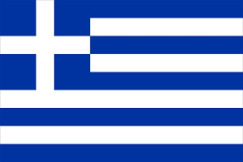
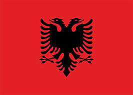
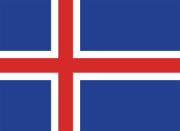

Panathinaikos
- ST
 Sporar [29] 5.000.000
Sporar [29] 5.000.000
- ST  Ioannidis [23] 2.500.000
- ST
 Jeremejeff [29] 1.500.000
Jeremejeff [29] 1.500.000
- RM
 Palacios [31] 3.000.000
Palacios [31] 3.000.000
- RM Mancini [26] 3.000.000
- LM Verbic [29] 3.000.000
- LM
 Aitor [27] 2.500.000
Aitor [27] 2.500.000
- CA
 Bernar [30] 3.000.000
Bernar [30] 3.000.000
- CA Djuricic [31] 1.800.000
- CM
 Vilhena [28] 3.800.000
Vilhena [28] 3.800.000
- CM Cerin [23] 2.500.000
- CM
 Kleinheisler [29] 1.800.000
Kleinheisler [29] 1.800.000
- CM Zeca [34] 300.000
- CD Perez [34] 1.000.000
- CD  Cokaj [24] 1.200.000
- RB Kotsiras [30] 800.000
- RB Vagiannidis [21] 1.200.000
- LB Juankar [33] 900.000
- LB Mladenovic [31] 900.000
- CB Schenkeveld [31] 1.500.000
- CB  Magnusson [30] 2.000.000
- CB
 Jedvaj [27] 2.500.000
Jedvaj [27] 2.500.000
- GK
 Brignoli [31] 1.800.000
Brignoli [31] 1.800.000
- GK
 Lodigyn [33] 500.000
Lodigyn [33] 500.000
- GK Xenopoulos [25] 200.000
- P Alafouzos
- C Jonanovic
- C Papadimitriou
- B: 48.200.000